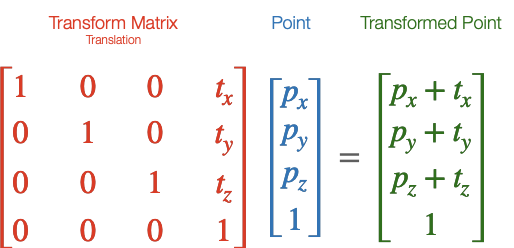
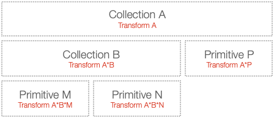
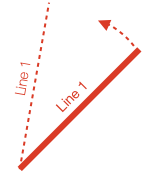

Introduction
FigureOne is a JavaScript library that makes it easy to create, animate and interact with shapes, text and equations in a browser. FigureOne can be used to create animated and interactive diagrams, slide shows and video like experiences.
Shape
In FigureOne, shapes are typically formed from multiple triangles.

Thus, in FigureOne a shape is a collection points that describe the vertices each triangle in a shape.
Transform
A transform describes a spatial change, for example a translation or rotation.
Mathematically, a transform is a 4x4 matrix that when mulitiplied with a point creates a new point that undergoes the transform. For example:

All transforms in FigureOne create such a matrix, and can be used to transform points.
Transforms can be chained together, so a rotation transform can be chained with a translation transform to both rotate and translate. Transform chains can be arbitrarily long, and include multiple transforms of the same type.
In the language of FigureOne, a Transform is made up of a series of transform components where each component is a single transform step (like a rotation or translation).
The Transform class makes creating transforms easy.
// Create a transform
const transform = new Fig.Transform().scale(2).rotate(Math.PI / 2).translate(0, 1);
// Get the transform matrix
const matrix = transform.matrix();
// Define a point
const p = new Fig.Point(2, 3);
// Transform the point
const transformedPoint = p.transformBy(matrix);
WebGL
FigureOne uses WebGL for drawing shapes. As of September 2021, WebGL is supported by 97.72% of browsers (with Opera Mini at 1.15%, Android Browser before 2014 at 0.35% and Internet Explorer before 2013 at 0.19% being the main browsers without support).
WebGL leverages GPU hardware to accelerate rendering. As such very complex shapes (with millions of vertices) can be rendered efficiently on low end clients. WebGL does this by limiting the amount of data transferred between the CPU and GPU on each draw frame, and moving as much of the the per vertex calculations into the GPU (where there are many parallel cores) as possible. A standard WebGL work flow is:
- Define the vertices of a shape once, and load them into a GPU memory buffer
- On each draw frame, pass a transform matrix from the CPU to GPU that will transform all the points in the shape
- The GPU then transforms each vertex in its memory buffer with the transform for final screen rendering
WebGL is very powerful, but can be hard to get started with due to its low-level nature relative to JavaScript. While FigureOne hides the complexity of WebGL from the user, it is still useful to understand the above workflow as FigureOne is organized with this work flow in mind, and the more such a work flow can be followed, then the more performant the end result will be.
FigureOne also supports the cases where this work flow is not adequate, for example when vertices of a shape are morphing into a different shape. In such cases care needs to be taken to ensure a good end user experience. See morphing for more information.
Figures, Primitives and Collections
A figure is composed of one or more figure elements. A figure element is a shape, some text, or it may be a collection of other elements. These elements combine to create a complex drawing, graph or equation.
In the language of FigureOne, there are two types of FigureElement:
- FigureElementPrimitive - an element that will draw something to the screen, such as a line, shape or text
- FigureElementCollection - collections of elements that will move or be operated on together
Each FigureElement has a Transform that transforms an element in space (e.g. rotates, translates, scales etc) when it is time to draw the element. In the case of a FigureElementPrimitive, the shape or text will be transformed. In the case of a FigureElementCollection, all the figure elements it contains will have their transforms cascaded with the collection's transform.
This means there is a heierachy of FigureElement objects, where the parent transform is combined with (cascaded with) the child transform. Therefore collections can be thought of as modular building blocks of a more complex figure.

Example
As an example, let's say we want to create a labeled line where the line and label both rotate together.

To create this, we could use a line and text primitive within a collection:

To rotate both label and line in tandem, we simply need to rotate the collection.
Code
Let's see the code for the example above. Two files, index.html and index.js should be in the same folder.
<!-- index.html -->
<!doctype html>
<html>
<body>
<div id="figureOneContainer" style="width: 1200px; height: 800px; background-color: white;">
</div>
<script type="text/javascript" src='https://cdn.jsdelivr.net/npm/figureone@0.15.10/figureone.min.js'></script>
<script type="text/javascript" src='./index.js'></script>
</body>
</html>
// Note: the `position` property is a short hand way of defining a transform with a
// translation component.
// Set the figure limits to be 0 ≤ x ≤ 6 and 0 ≤ y ≤ 4
const figure = new Fig.Figure({ scene: [0, 0, 6, 4] });
figure.add(
{
name: 'labeledLine',
make: 'collection',
elements: [
{
make: 'line',
p1: [0, 0],
p2: [2, 0],
width: 0.01,
color: [1, 0, 0, 1],
},
{
make: 'text',
text: 'Line 1',
// Set the label position to be at the middle point of the line
// And slightly above it
position: [1, 0.1],
font: { color: [1, 0, 0, 1] },
xAlign: 'center',
},
],
// Set the position of the collection such that the end of the line is
// in the middle of the figure
position: [3, 2],
touchBorder: 0.3,
move: {
type: 'rotation',
},
},
);
This code positions text relative to the middle of a line of length 2.

It then positions the collection so the line end is in the middle of the figure.

Coordinate spaces
FigureOne renders shapes in WebGL, text with the HTML Canvas API and can even manipulate html elements as figure elements. As WebGL is used most in FigureOne, it will be used as an example to introduce coorindate spaces and why they matter.
WebGL is rendered in a html canvas element.
The canvas element is defined in screen pixels. WebGL re-maps the canvas pixels to -1 to +1 coordinates in both the vertical and horizontal directions, independent on the aspect ratio of the canvas.
When the canvas aspect ratio is not a square, or it is more convenient to create a figure in a coordinate space not mapped between -1 to +1, then it is useful to have a separate figure space. In the example above, the figure space re-maps the GL space to 0 to 6 in the horizontal and 0 to 4 in the vertical.
These are three examples of different coordinate spaces - pixel space, GL space (also called clip space in WebGL nomenclature) and figure space.
If you want to move or modify an element, you need to think about what you want to modify it relative to. Do you want to move it relative to other elements in the figure? In other words, do you want to move it in figure space? Or do you want to move it relative to other elements within the parent collection - local space. Alternately, you might want to modify the vertices of the shape, in draw space.
In simple figures, where no collections are used, or collections don't transform their child elements you don't really need to think about what space you are working in. Figure space will be the same as local space, if you aren't changing vertices of primitives then draw space won't be used, and GL and pixel spaces are rarely needed for most figures as FigureOne handles touch events.
But if you are using collections you may need to convert points between the different spaces. In addition, it is useful to know about these different spaces as sometimes they are referred to in the documentation.
One way to think about what space you are modifying is:
- Elements that are direct children of the figure: element transforms move the element in figure space
- Elements that are direct children of a collection: element transforms move the element in local space (the space of the parent colleciton)
- Vertex or text definitions in element primitives: draw space
- A collection's children are in the collection's draw space
For example, a square's vertices are defined in draw space.
The transform of the figure element primitive that draws the square will move the square in local space - the space relative to all other elements that are the children of the same parent collection.
If the parent collection's parent is the figure itself, then its transform will move the collection in figure space.
Converting between spaces is relatively straight forward. Figure elements have methods to find their position or bounds in figure, local or draw space. The figure has transforms that allow conversion between figure, GL and pixel spaces. For example see:
- FigureElement.spaceTransformMatrix()
- FigureElement.getPosition()
- FigureElement.setPositionToElement()
- Figure.spaceTransformMatrix()
An example of where this is useful is if two FigureElements have different parents, and you want to move one to be in the same position as the other. To do this you would convert the target FigureElement position to figure space, and then to the local space of the FigureElement to move.
Drawing
When it is time to draw the scene, the figure will pass an initial transform to the first element in the hierarchy. In the example above, the "Labeled Line" collection. This transform will include any translations and scaling needed to convert from figure space to GL space for actual rendering.
The "Labeled Line" collection will then cascade this transform with it's own rotation and translation transform, and pass this to its children, the "Label" and "Line" primitives.
The "Label" primitive has it's own transform that translates it to the middle of the horizontal line in local space. The transform will be combined with the one from its parent, creating a final transform to draw the label with.
The primitive's shape or text definition never needs to change. At draw time, it is simply transformed by it's own transform and all the ancestors directly above it in the hierarchy. This is the same method used by WebGL as it reduces the amount of data that needs to be loaded into the graphics memory each draw frame. All the vertices of a shape are loaded into the graphics memory just once, and for each frame just a transform is passed to inform the graphics processor how to orient the vertices.
If you have a dynamic shape whose vertices do change every frame (like a morphing animation), you can choose to load the vertices every frame. However, depending on the performance of the browser's host machine, and the number of vertices being adjusted, you might see a performance impact compared to a shape with a similar amount of vertices that do not change. That said, for shapes of reasonable size, this will not be a problem.
Creating Shapes
There are several ways to define a shape that a FigureElementPrimitive will draw. FigureOne comes with:
- Built-in shapes
- Generic (custom) shapes
- Low level GL shapes through which WebGL concepts such as shaders, attributes, uniforms and textures can be defined allowing for complete customization and performance optimization
Built-In Shapes
FigureOne comes with a number of common, customizable shapes. For example, to add a polygon to a figure (see OBJ_Polygon for all possible polygon options):
figure.add({
make: 'polygon',
sides: 6,
radius: 0.5,
});
When adding an element to the figure, the most important property (and only one that is required to be defined) is make which tells FigureOne which built-in shape to use. The remaining properties are optional.
For a complete list of built in shapes see:
Generic Shapes
If you need to create a shape that is very different from the built-in shapes then the generic or generic3 primitive can be used. Most commonly, the points used to define the shape actually define a series of triangles that create a fill. The example below creates two triangles.
figure.add({
make: 'generic',
points: [
[-1, -1], [0, -1], [0, 1],
[0, -1], [1, -1], [1, 1],
],
});
For more information on drawing generic shapes see:
- 2D Shape Primitives
- OBJ_Generic
- OBJ_Generic3
Low Level GL Shapes
FigureElements are optimized for both performance and convenience. To fully optimize for performance, a lower level GL primitive can be used (see OBJ_GenericGL).
Using this primitive requires some familiarity with the concepts of WebGL. It provides an easy way to create custom shaders with custom attributes and uniforms.
This primitive still handles all calls to the WebGL API, and so it is a relatively easy way to get started with WebGL shaders.
The OBJ_GenericGL has example code on how to use this primitive.
It is not in the scope of this documentation to explain what WebGL is, and how to use it. There are many good resources on the web that already do this - for example WebGLFundamentals gives an excellent introduction to WebGL and this quick reference guid is useful to refer to especially when writing shaders.
Using FigureOne
The example above shows how a figure can be defined with simple javascript objects, that are able to be encoded in JSON. This means complex figures or modules can be shared and reused easily.
For many uses, it is fine to fully define a figure and all its elements before a user interacts with it.
Figures can also be defined more dynamically, such as in the example below which has exactly the same function as the example above.
// index.js
const figure = new Fig.Figure({ scene: [0, 0, 6, 4 ]});
const label = figure.primitives.text({
text: 'Line 1',
position: [1, 0.1],
font: { color: [0, 0, 1, 1] },
xAlign: 'center',
});
const line = figure.primitives.line({
p1: [0, 0],
p2: [2, 0],
width: 0.01,
color: [0, 0, 1, 1],
});
const labeledLine = figure.collections.collection({
position: [3, 2],
touchBorder: 0.3,
});
figure.elements.add('labeledLine', labeledLine);
labeledLine.add('line', line);
labeledLine.add('label', label);
labeledLine.move.type = 'rotation';
labeledLine.setMovable();
Boilerplate Code
To test examples within the API reference create an index.html file and index.js file. All examples are snippets which can be appended to the end of the index.js file.
The index.html file is the same for all examples:
<!-- index.html -->
<!doctype html>
<html>
<body>
<div id="figureOneContainer" style="width: 800px; height: 800px; background-color: white;">
</div>
<script type="text/javascript" src='https://cdn.jsdelivr.net/npm/figureone@0.15.10/figureone.min.js'></script>
<script type="text/javascript" src='./index.js'></script>
</body>
</html>
The index.js file is different depending on the example.
2D Boilerplate
// index.js
const figure = new Fig.Figure({ scene: [-3, -3, 3, 3], color: [1, 0, 0, 1], lineWidth: 0.01, font: { size: 0.1 } });
3D Boilerplate
// Create the figure and set the scene
const figure = new Fig.Figure({
scene: {
style: 'orthographic',
camera: { position: [2, 1, 1], up: [0, 1, 0] },
light: { directional: [0.7, 0.5, 0.2] } },
},
});
// Add x, y, z axis
figure.add(
{
make: 'collections.axis3',
start: -1,
width: 0.01,
length: 2,
},
);
Text Boilerplate
// index.js
const figure = new Fig.Figure({ scene: [-3, -3, 3, 3], color: [1, 0, 0, 1], lineWidth: 0.01, font: { size: 0.1 } });
figure.add([
{
name: 'origin',
make: 'polygon',
radius: 0.01,
line: { width: 0.01 },
sides: 10,
color: [0.7, 0.7, 0.7, 1]
},
{
name: 'gridMinor',
make: 'grid',
bounds: [-3, -3, 6, 6],
step: 0.1,
color: [0.7, 0.7, 0.7, 1],
line: { width: 0.001 },
},
{
name: 'gridMajor',
make: 'grid',
bounds: [-3, -3, 6, 6],
step: 0.5,
color: [0.8, 0.8, 0.8, 1],
line: { width: 0.004 },
},
]);
Animation Boilerplate
// index.js
const figure = new Fig.Figure({ scene: [-3, -3, 3, 3], color: [1, 0, 0, 1], lineWidth: 0.01, font: { size: 0.1 } });
// grid
figure.add([
{
name: 'origin',
make: 'polygon',
radius: 0.01,
line: { width: 0.01 },
sides: 10,
color: [0.7, 0.7, 0.7, 1]
},
{
name: 'grid',
make: 'grid',
bounds: [-3, -3, 6, 6],
step: 0.1,
color: [0.7, 0.7, 0.7, 1],
line: { width: 0.001 },
},
{
name: 'gridMajor',
make: 'grid',
bounds: [-3, -3, 6, 6],
step: 0.5,
color: [0.8, 0.8, 0.8, 1],
line: { width: 0.004 }
},
]);
// shape to animate
const p = figure.add(
{
name: 'p',
make: 'polygon',
sides: 4,
radius: 0.5,
position: [0, 0],
},
);